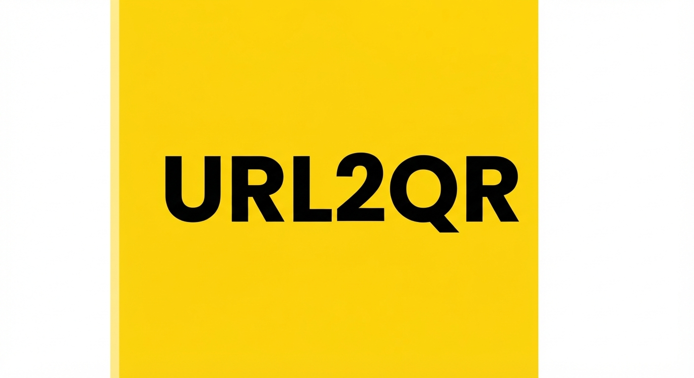

OpenAPI 초고속 단축
길고 복잡한 URL을
깔끔하고 짧게 줄여보세요
단축할 웹 주소를 입력하면 OpenAPI를 통해 즉시 짧은 링크로 변환됩니다.
클릭 한 번으로 손쉽게 복사하거나 QR코드로 연동할 수 있어요.

단축할 웹 주소를 입력하면 OpenAPI를 통해 즉시 짧은 링크로 변환됩니다.
클릭 한 번으로 손쉽게 복사하거나 QR코드로 연동할 수 있어요.